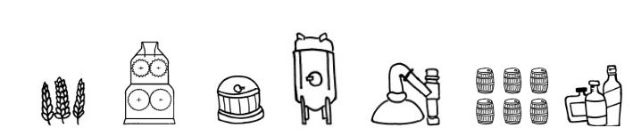
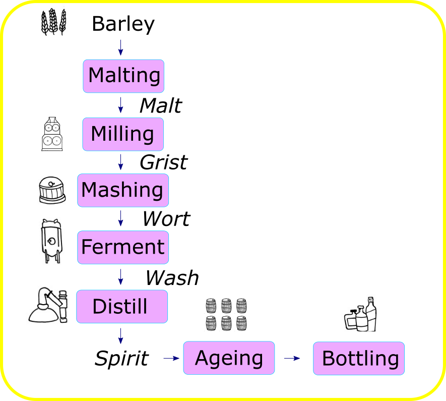
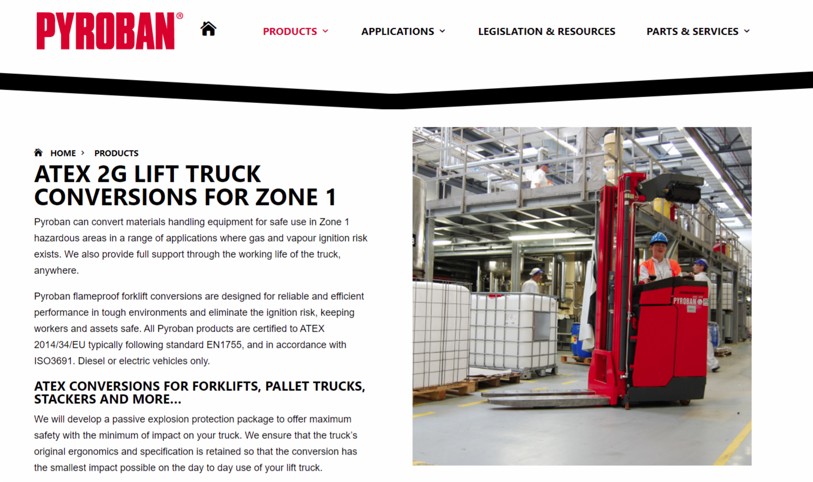

Separations III:
Whisk(e)y
Dr Shane V Crowley
Press down for controls and right to progress
Interacting with the Slides
📺Full screen: press the F key
🎮View video controls: hover cursor over video
👩🎨 Draw: click icon or press C
🌈Pen colour: press X to cycle and Y to revert
💁 Options and Info: click icon or press M
Links to video below:
👉https://youtu.be/WOiUmNBKomU
Irish Whiskey
- Sales growth of 40-50% in recent years
- Several distillers have expanded
- UCC graduates work in distilleries
An integrated process

Process flow
Families of spirits
 Correction: rum is the third congenericBefore the whiskey can be distilled the barley must be malted, where it is first steeped to around 45% moisture and then germinated.
Drying of malt in a kiln has effects on biochemical processes in the malt and sensory properties in the final whisk(e)y
Malt 👉 Grist
Grist has high surface area ➕ high levels of starch. Mashing activates natural enzymes in the malt at their $T_{opt}$. Multiple holding-draining cycles may be used.
$SUGAR + YEAST 👉 ALCOHOL + CO_2$
Double Distillation
- Wash distilled to produce "low wines"
- Low wines cut into heads, heart and tails
Heart = Spirit
Triple Distillation
- Wash distilled to produce "low wines"
- Low wines distilled to "strong feints"
- Strong feints distilled into heart
Heads and feints recycled in 2nd and 3rd still
Precautions in high ethanol environment
The "Angel's share"

Summary
- An integrated multi-step process
- Biochemical and physico-chemical effects
- Highly technological but also traditional
Next Lecture
Bulk Solids
shane.crowley@ucc.ie